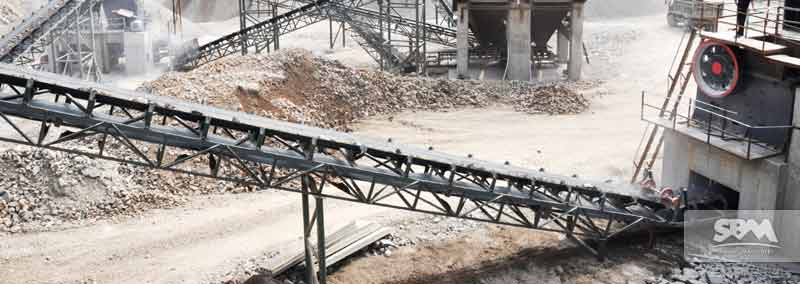

The mobile crusher is a mobile device that crushes rivers and stones. It is also a popular equipment for users. Due to its high production efficiency, convenient use and maintenance, economical operation, stable and reliable work, it can be moved in and out of the site. The operation is carried out according to the user's needs anytime and anywhere, which brings great convenience to the user and saves a lot of concerns. Therefore, the user recognition in the broken line is quite high.
We all know that the portable crusher plant is a crushing device with a variety of equipments. Different combinations of different configurations, the size and operation of the broken products are different, and the functional characteristics of the equipment. Therefore, users should be clear about their actual needs. Let's look at the types of portable crusher plants that are used more.
The portable crusher plant and the jaw crusher-based portable crusher plant are mainly used in two combinations. The processed river stone materials have uniform particle size and less needle content, which is in line with users. Using the demand standard, we provide high-quality sand and gravel aggregates for users of many industrial constructions such as construction, highways, engineering, etc. Therefore, users who have strict requirements on finished grain types can choose these two stone machines.
From the above we can see that the combination of portable crusher plant is various. How much does it cost to purchase a 300-ton portable crusher plant? This also needs to be determined according to the actual selection of the customer. Different equipments are different in terms of different types of finished products, configuration, and production capacity. Each user has different emphasis on the equipment. Some users pay more attention to the finished product granularity. Some users care about capacity. Therefore, users are advised to consult the corresponding manufacturers according to their own priorities when purchasing the 300-ton portable crusher plant.
Quartz stone is a very important ore resource. Quartz stone needs to be processed before it can be used in our production and life. Therefore, we will talk about the crushing and processing of quartz stone here. Quartz stone crusher is required for the crushing treatment of quartz stone. It is very important to have a part in the portable crusher plant. It is the lining plate of the quartz stone crusher. The lining plate is installed at the bottom of the quartz stone crusher to reduce the wear. Extend the life of the crusher.
We remind the users to pay attention to the wear of the liner in the quartz stone crusher during use. How to reduce the wear of the quartz stone crusher liner, how to replace the liner of the quartz crusher? Simply talk to everyone here. Let's take a look at what the quartz sand crusher should pay attention to when replacing the liner.
First of all, we remind the users to power off before replacing the lining of the quartz stone crusher, and close the main switch; after blocking the power supply, it is necessary to hang the "fixing" warning sign in a conspicuous position; if the old in the quartz stone crusher When the liner is not taken down, it can be cut by gas welding and the inner surface of the rack can be cleaned. Everyone should pay attention to the quartz stone crusher liner and the newly cast concrete. It is made of cement and sand of 500 to 600, and the ratio is 1:3 by weight.
After the liner on the quartz stone crusher is installed, the compression nut should be installed first, and then the zinc alloy should be cast. Before casting, the cone and the lining plate are preheated at 60-80 буC. The gap between the joints of the lining plate should be covered with asbestos and clay. After the zinc alloy leaks out of the lining plate and cast the alloy, install the compression nut and the locking plate. , so that it is tightly fixed; after all operations are completed, the machine will be disconnected for trial operation, and the empty machine will run for a period of time to ensure safety before use.